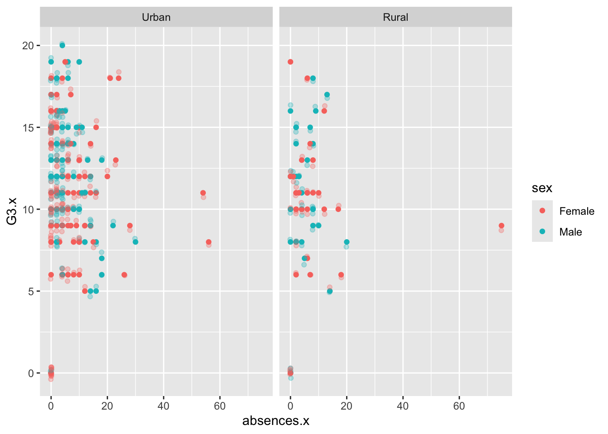

school sex age address famsize Pstatus Medu Fedu Mjob Fjob reason
1 GP F 15 R GT3 T 1 1 at_home other home
2 GP F 15 R GT3 T 1 1 other other reputation
3 GP F 15 R GT3 T 2 2 at_home other reputation
4 GP F 15 R GT3 T 2 4 services health course
5 GP F 15 R GT3 T 3 3 services services reputation
6 GP F 15 R GT3 T 3 4 services health course
nursery internet guardian.x traveltime.x studytime.x failures.x schoolsup.x
1 yes yes mother 2 4 1 yes
2 no yes mother 1 2 2 yes
3 yes no mother 1 1 0 yes
4 yes yes mother 1 3 0 yes
5 yes yes other 2 3 2 no
6 yes yes mother 1 3 0 yes
famsup.x paid.x activities.x higher.x romantic.x famrel.x freetime.x goout.x
1 yes yes yes yes no 3 1 2
2 yes no no yes yes 3 3 4
3 yes yes yes yes no 4 3 1
4 yes yes yes yes no 4 3 2
5 yes yes yes yes yes 4 2 1
6 yes yes yes yes no 4 3 2
Dalc.x Walc.x health.x absences.x G1.x G2.x G3.x guardian.y traveltime.y
1 1 1 1 2 7 10 10 mother 2
2 2 4 5 2 8 6 5 mother 1
3 1 1 2 8 14 13 13 mother 1
4 1 1 5 2 10 9 8 mother 1
5 2 3 3 8 10 10 10 other 2
6 1 1 5 2 12 12 11 mother 1
studytime.y failures.y schoolsup.y famsup.y paid.y activities.y higher.y
1 4 0 yes yes yes yes yes
2 2 0 yes yes no no yes
3 1 0 yes yes no yes yes
4 3 0 yes yes no yes yes
5 3 0 no yes yes yes yes
6 3 0 yes yes no yes yes
romantic.y famrel.y freetime.y goout.y Dalc.y Walc.y health.y absences.y G1.y
1 no 3 1 2 1 1 1 4 13
2 yes 3 3 4 2 4 5 2 13
3 no 4 3 1 1 1 2 8 14
4 no 4 3 2 1 1 5 2 10
5 yes 4 2 1 2 3 3 2 13
6 no 4 3 2 1 1 5 2 11
G2.y G3.y
1 13 13
2 11 11
3 13 12
4 11 10
5 13 13
6 12 12
#View(comb_df)
Warning message: In inner_join(data1, data2, by = c(“school”, “sex”, “age”, “address”, : Detected an unexpected many-to-many relationship between x and y. ℹ Row 79 of x matches multiple rows in y. ℹ Row 79 of y matches multiple rows in x. ℹ If a many-to-many relationship is expected, set relationship = "many-to-many" to silence this warning.
#combine_data <- inner_join(math_data, por_data, by = #c("school","sex","age","address","famsize","Pstatus","Medu","Fedu","Mjob","Fjob","reason","nursery","internet"))combine_data <-inner_join(math_data, por_data, by =setdiff(colnames(math_data), c("G1", "G2", "G3", "paid", "absences")))print(nrow(combine_data))
[1] 320
print(combine_data)
# A tibble: 320 × 38
school sex age address famsize Pstatus Medu Fedu Mjob Fjob reason
<chr> <chr> <dbl> <chr> <chr> <chr> <dbl> <dbl> <chr> <chr> <chr>
1 GP F 18 U GT3 A 4 4 at_home teach… course
2 GP F 17 U GT3 T 1 1 at_home other course
3 GP F 15 U GT3 T 4 2 health servi… home
4 GP F 16 U GT3 T 3 3 other other home
5 GP M 16 U LE3 T 4 3 services other reput…
6 GP M 16 U LE3 T 2 2 other other home
7 GP F 17 U GT3 A 4 4 other teach… home
8 GP M 15 U LE3 A 3 2 services other home
9 GP M 15 U GT3 T 3 4 other other home
10 GP F 15 U GT3 T 4 4 teacher health reput…
# ℹ 310 more rows
# ℹ 27 more variables: guardian <chr>, traveltime <dbl>, studytime <dbl>,
# failures <dbl>, schoolsup <chr>, famsup <chr>, paid.x <chr>,
# activities <chr>, nursery <chr>, higher <chr>, internet <chr>,
# romantic <chr>, famrel <dbl>, freetime <dbl>, goout <dbl>, Dalc <dbl>,
# Walc <dbl>, health <dbl>, absences.x <dbl>, G1.x <dbl>, G2.x <dbl>,
# G3.x <dbl>, paid.y <chr>, absences.y <dbl>, G1.y <dbl>, G2.y <dbl>, …
# A tibble: 395 × 33
school sex age address famsize Pstatus Medu Fedu Mjob Fjob reason
<fct> <fct> <dbl> <fct> <chr> <chr> <dbl> <dbl> <chr> <chr> <fct>
1 Gabriel P… Fema… 18 Urban GT3 A 4 4 at_h… teac… Course
2 Gabriel P… Fema… 17 Urban GT3 T 1 1 at_h… other Course
3 Gabriel P… Fema… 15 Urban LE3 T 1 1 at_h… other Other
4 Gabriel P… Fema… 15 Urban GT3 T 4 2 heal… serv… Home
5 Gabriel P… Fema… 16 Urban GT3 T 3 3 other other Home
6 Gabriel P… Male 16 Urban LE3 T 4 3 serv… other Reput…
7 Gabriel P… Male 16 Urban LE3 T 2 2 other other Home
8 Gabriel P… Fema… 17 Urban GT3 A 4 4 other teac… Home
9 Gabriel P… Male 15 Urban LE3 A 3 2 serv… other Home
10 Gabriel P… Male 15 Urban GT3 T 3 4 other other Home
# ℹ 385 more rows
# ℹ 22 more variables: guardian <chr>, traveltime <dbl>, studytime <dbl>,
# failures <dbl>, schoolsup <chr>, famsup <chr>, paid <chr>,
# activities <chr>, nursery <chr>, higher <chr>, internet <chr>,
# romantic <chr>, famrel <dbl>, freetime <dbl>, goout <dbl>, Dalc <dbl>,
# Walc <dbl>, health <dbl>, absences <dbl>, G1 <dbl>, G2 <dbl>, G3 <dbl>
# A tibble: 649 × 33
school sex age address famsize Pstatus Medu Fedu Mjob Fjob reason
<fct> <fct> <dbl> <fct> <chr> <chr> <dbl> <dbl> <chr> <chr> <fct>
1 Gabriel P… Fema… 18 Urban GT3 A 4 4 at_h… teac… Course
2 Gabriel P… Fema… 17 Urban GT3 T 1 1 at_h… other Course
3 Gabriel P… Fema… 15 Urban LE3 T 1 1 at_h… other Other
4 Gabriel P… Fema… 15 Urban GT3 T 4 2 heal… serv… Home
5 Gabriel P… Fema… 16 Urban GT3 T 3 3 other other Home
6 Gabriel P… Male 16 Urban LE3 T 4 3 serv… other Reput…
7 Gabriel P… Male 16 Urban LE3 T 2 2 other other Home
8 Gabriel P… Fema… 17 Urban GT3 A 4 4 other teac… Home
9 Gabriel P… Male 15 Urban LE3 A 3 2 serv… other Home
10 Gabriel P… Male 15 Urban GT3 T 3 4 other other Home
# ℹ 639 more rows
# ℹ 22 more variables: guardian <chr>, traveltime <dbl>, studytime <dbl>,
# failures <dbl>, schoolsup <chr>, famsup <chr>, paid <chr>,
# activities <chr>, nursery <chr>, higher <chr>, internet <chr>,
# romantic <chr>, famrel <dbl>, freetime <dbl>, goout <dbl>, Dalc <dbl>,
# Walc <dbl>, health <dbl>, absences <dbl>, G1 <dbl>, G2 <dbl>, G3 <dbl>
# A tibble: 6 × 38
school sex age address famsize Pstatus Medu Fedu Mjob Fjob reason
<fct> <fct> <dbl> <fct> <chr> <chr> <dbl> <dbl> <chr> <chr> <fct>
1 Gabriel Pe… Fema… 18 Urban GT3 A 4 4 at_h… teac… Course
2 Gabriel Pe… Fema… 17 Urban GT3 T 1 1 at_h… other Course
3 Gabriel Pe… Fema… 15 Urban GT3 T 4 2 heal… serv… Home
4 Gabriel Pe… Fema… 16 Urban GT3 T 3 3 other other Home
5 Gabriel Pe… Male 16 Urban LE3 T 4 3 serv… other Reput…
6 Gabriel Pe… Male 16 Urban LE3 T 2 2 other other Home
# ℹ 27 more variables: guardian <chr>, traveltime <dbl>, studytime <dbl>,
# failures <dbl>, schoolsup <chr>, famsup <chr>, paid.x <chr>,
# activities <chr>, nursery <chr>, higher <chr>, internet <chr>,
# romantic <chr>, famrel <dbl>, freetime <dbl>, goout <dbl>, Dalc <dbl>,
# Walc <dbl>, health <dbl>, absences.x <dbl>, G1.x <dbl>, G2.x <dbl>,
# G3.x <dbl>, paid.y <chr>, absences.y <dbl>, G1.y <dbl>, G2.y <dbl>,
# G3.y <dbl>
#cat("summary of combined data \n", summary(combine_data))com_data_summ <- combine_data |>summarise(across(where(is.numeric), list(mean = mean, std = sd, med = median)))#View(com_data_summ)com_data_summ_long <- com_data_summ |>pivot_longer(cols =everything(),names_to =c("Feature", "Statistic"),names_sep ="_", # Separate Feature and statistic by "_"values_to ="value")# View the result in long format#View(com_data_summ_long)head(com_data_summ_long)
# A tibble: 6 × 3
Feature Statistic value
<chr> <chr> <dbl>
1 age mean 16.5
2 age std 1.14
3 age med 16
4 Medu mean 2.87
5 Medu std 1.07
6 Medu med 3
# Find the missing valuesloc_missing_data <-which(is.na(combine_data), arr.ind =TRUE)cat("Location of Missing values in row and column are",loc_missing_data)
Location of Missing values in row and column are
miss_data <-sum(is.na(combine_data))cat("Number of missing values in Tibble are:-\n", miss_data)
Number of missing values in Tibble are:-
0
* In this Combine Data there is no missing values.
Categorical Variables
Create a one-way contingency table, a two-way contingency table, and a three-way contingency table for some of the factor variables you created previously. Use table() to accomplish this. – Interpret a number from each resulting table (that is, pick out a value produced and explain what that value means.)
Create a conditional two-way table using table(). That is, condition on one variable’s setting and create a two-way table. Do this using two different methods:
– Once, by subsetting the data (say with filter()) and then creating the two-way table – Once, by creating a three-way table and subsetting it.
Create a two-way contingency table using group_by() and summarize() from dplyr. Then use pivot_wider() to make the result look more like the output from table().
Create a stacked bar graph and a side-by-side bar graph. Give relevant x and y labels, and a title for the plots.
, , = Home
Urban Rural
Gabriel Pereira 73 6
Mousinho da Silveira 5 3
, , = Reputation
Urban Rural
Gabriel Pereira 63 17
Mousinho da Silveira 1 4
, , = Course
Urban Rural
Gabriel Pereira 84 22
Mousinho da Silveira 6 6
, , = Other
Urban Rural
Gabriel Pereira 19 3
Mousinho da Silveira 2 6
In 3 way contingency table we differentiate data according to reason. In every reason we take the school and in every school how many students are coming from Urban and Rural address.
2. Create a conditional two-way table using table().
– Once, by subsetting the data (say with filter()) and then creating the two-way table.
Urban Rural
Gabriel Pereira 84 22
Mousinho da Silveira 6 6
3. Create a two-way contingency table using group_by() and summarize() from dplyr. Then use
pivot_wider() to make the result look more like the output from table().
combine_data |>group_by(address,school) |>summarize(count =n(), .groups ='drop') |>#.groups = "drop" :-- drop the grouping structure after summarizationpivot_wider(names_from = address, values_from = count)
# A tibble: 2 × 3
school Urban Rural
<fct> <int> <int>
1 Gabriel Pereira 239 48
2 Mousinho da Silveira 14 19
4. Create a stacked bar graph and a side-by-side bar graph.
Stacked Bar Graph
ggplot(combine_data) +geom_bar(aes(x=school, fill = reason)) +labs(title ="Distribution of Students by school and Reason for choosing the school",x ="School",y ="Number of Students" ) +theme_classic()
Total height of each bar represents the total number of students enrolled in each school.
Side by side bar graph
ggplot(data = combine_data) +aes(x = sex, fill = school) +geom_bar(position ="dodge") +scale_fill_discrete("school") +facet_wrap(~sex) +labs(title ="Count of students by school and sex",x ="Sex",y ="Number of Students" ) +theme_gray()
Comparison between Male and Female students according to school. In this it is showing that number of Female are more in Gabriel Pereira school.
Numerical Variables (and across groups)
Here is age, absences and the three test grades variables (G1, G2 and G3) are numeric. ### 1. • Find measures of center and spread for three of these variables (including at least one G3 variable) – Repeat while subsetting the data in a meaningful way.
# Measure of centermeas_of_center <- combine_data |>summarize(across(c("age","absences.x","absences.y","G3.x", "G3.y"),list("Mean"= mean, "Median"= median, "Std"= sd, "IQR"= IQR ),.names ="{.col}_{.fn}"))meas_of_center_long <- meas_of_center |>pivot_longer(cols =everything(),names_to =c("Feature", "Statistic"),names_sep ="_",values_to ="value")# View the result in long formathead(meas_of_center_long)
# A tibble: 6 × 3
Feature Statistic value
<chr> <chr> <dbl>
1 age Mean 16.5
2 age Median 16
3 age Std 1.14
4 age IQR 1
5 absences.x Mean 5.41
6 absences.x Median 4
meas_of_center_long
# A tibble: 20 × 3
Feature Statistic value
<chr> <chr> <dbl>
1 age Mean 16.5
2 age Median 16
3 age Std 1.14
4 age IQR 1
5 absences.x Mean 5.41
6 absences.x Median 4
7 absences.x Std 7.84
8 absences.x IQR 7.25
9 absences.y Mean 3.25
10 absences.y Median 2
11 absences.y Std 4.56
12 absences.y IQR 4
13 G3.x Mean 11.0
14 G3.x Median 11
15 G3.x Std 4.30
16 G3.x IQR 5
17 G3.y Mean 12.9
18 G3.y Median 13
19 G3.y Std 2.89
20 G3.y IQR 4
# A tibble: 6 × 3
Feature Statistic value
<chr> <chr> <dbl>
1 age Mean 16.4
2 age Median 16
3 age Std 1.22
4 age IQR 2
5 absences.x Mean 4.97
6 absences.x Median 4
# A tibble: 6 × 3
Feature Statistic value
<chr> <chr> <dbl>
1 age Mean 16.4
2 age Median 16
3 age Std 1.10
4 age IQR 1
5 absences.x Mean 5.64
6 absences.x Median 4
Find measures of center and spread across a single grouping variable for three of these variables (including a G3 variable as one of them)
# A tibble: 6 × 4
school Feature Statistic value
<fct> <chr> <chr> <dbl>
1 Gabriel Pereira age Mean 16.4
2 Gabriel Pereira age Median 16
3 Gabriel Pereira age Std 1.10
4 Gabriel Pereira age IQR 1
5 Gabriel Pereira absences.x Mean 5.64
6 Gabriel Pereira absences.x Median 4
Find measures of center and spread across two grouping variables for three of these variables (including a G3 variable as one of them)
# A tibble: 6 × 5
# Groups: school [1]
school sex Feature Statistic value
<fct> <fct> <chr> <chr> <dbl>
1 Gabriel Pereira Female age Mean 16.5
2 Gabriel Pereira Female age Median 16
3 Gabriel Pereira Female age Std 1.03
4 Gabriel Pereira Female age IQR 1
5 Gabriel Pereira Female absences.x Mean 6.12
6 Gabriel Pereira Female absences.x Median 4
Create a correlation matrix between all of the numeric variables
Create a histogram, kernel density plot, and boxplot for two of the numeric variables across one of the categorical variables (that is, create graphs that can compare the distributions across the groups on the same plot (no faceting here)). Add appropriate labels and titles. # create 6 graphs
# Histogramhist_age <-ggplot(combine_data, aes(x = age, fill = sex)) +geom_histogram(position ="dodge", alpha =0.6, binwidth =1) +labs(title ="Histogram of Age by Sex",x ="Age",y ="Count",fill ="Sex" ) +theme_minimal()hist_age
The distribution of ages is fairly consistent between males and females. Both the groups have age between 15 and 18.
histogram_plot <-ggplot(combine_data, aes(x = age, fill = school)) +geom_histogram(binwidth =1, color ="black", position ="dodge") +labs(title ="Histogram of Age by School",x ="Age",y ="Count",fill ="School" ) +theme_minimal()histogram_plot
Gabriel Pereiran has more population compare to Mousinho da Silveira school.
# kernel density plotschool_kernel_plot <-ggplot(combine_data, aes(x = age, color = school, linetype =as.factor(failures))) +geom_density(alpha =0.5, aes(fill =as.factor(failures))) +theme_minimal() +labs(title ="Kernel Density Plot of Age by school and Failures",x ="Age",y ="Density",color ="school",linetype ="Number of Failures",fill ="Number of Failures" )school_kernel_plot
In this Graph it indicates that the majority of students, especially at younger ages, have no academic failures. There is a notable peak of students around age 18 for both schools, but Gabriel Pereira seems to have more students in this age group without failures, while Mousinho da Silveira shows more students with multiple failures in older age groups.
# Kernel Density Plotkernel_plot <-ggplot(combine_data, aes(x = age, color = address, linetype =as.factor(failures))) +geom_density(alpha =0.5, aes(fill =as.factor(failures))) +theme_minimal() +labs(title ="Kernel Density Plot of Age by Reason and Failures",x ="Age",y ="Density",color ="address",linetype ="Number of Failures",fill ="Number of Failures" )kernel_plot
Warning: Groups with fewer than two data points have been dropped.
Warning in max(ids, na.rm = TRUE): no non-missing arguments to max; returning
-Inf
It is showing that most significant peak around age of 16-18 for students with 0 failures. Here is fewer students from rural address.
# boxplotschool_boxplot <-ggplot(combine_data) +geom_boxplot(aes(x = school, y = age, fill = school)) +geom_jitter(aes(x = school, y = age), width =0.1, alpha =0.3) +labs(title ="Age Distribution by School",x ="School",y ="Age",fill ="School" ) +theme_minimal()school_boxplot
here we can see some outliers in both the school.
Gabriel Pereira has a more concentrated age range with the majority of students near by 16 to 18 years.
Mousinha da Silveira has a range above the 18 years.
# Boxplotreason_boxplot <-ggplot(combine_data) +geom_boxplot(aes(x = reason, y = absences.x, fill = reason))reason_boxplot
Create two scatter plots relating a G3 variable to other numeric variables (put G3 on the y-axis). You should jitter the points if they sit on top of each other. Color the points by a categorical variable in each. Add appropriate labels and titles.
#numeric_scatter <- ggplot(combine_data) |># aes(x = age, y = G3, color = sex)#numeric_scatter + geom_point()numeric_scatter <-ggplot(combine_data, aes(x = age, y = G3.x, color = sex)) +geom_point() +geom_jitter(width =0.2, alpha =0.3) +labs(title ="Scatter Plot of Age vs G3.x by Sex",x ="Age",y ="Final Grade(G3)")numeric_scatter
numeric_scatter_absence <-ggplot(combine_data, aes(x = absences.x, y = G3.x, color = sex)) +geom_point() +geom_jitter(width =0.2, alpha =0.3) +labs(title ="Scatter Plot of Absences vs G3.x by Sex",x ="Absences",y ="Final Grade(G3)")numeric_scatter_absence
Repeat the scatter plot step but use faceting to obtain graphs at each setting of another categorical variable.
numeric_scatter_facet <-ggplot(combine_data, aes(x = age, y = G3.x, color = sex)) +geom_point() +geom_jitter(width =0.2, alpha =0.3) +facet_wrap(~ school) +labs(title ="Scatter Plot of Age vs G3.x by Sex, Faceted by School",x ="Age",y ="Final Grade (G3)",color ="Sex" ) +theme_light()numeric_scatter_facet
numeric_scatter_absence_facet <-ggplot(combine_data, aes(x = absences.x, y = G3.x, color = sex)) +geom_point() +geom_jitter(width =0.2, alpha =0.3) +facet_wrap(~ address)labs(title ="Scatter Plot of Absences vs G3.x by Address",x ="Absences",y ="Final Grade(G3)") +theme_classic()
NULL
numeric_scatter_absence_facet

Repeat the scatter plot step but use faceting to obtain graphs at each combination of two categorical variables.
categ_scatter <-ggplot(combine_data, aes(x = age, y = G3.x, color = sex)) +geom_point() +geom_jitter(width =0.2, alpha =0.3) +facet_grid(school ~ sex) +# Facet by 'school' (rows) and 'sex' (columns)labs(title ="Scatter Plot of Age vs G3.x by School and Sex",x ="Age",y ="Final Grade (G3)",color ="Sex" ) categ_scatter